Getting started with rphylopic
An Introduction to the rphylopic R package
2026-10-09
Learning Objectives
By the end of this module, you will be able to:
- Explain what PhyloPic is and how the rphylopic package uses the PhyloPic Application Programming Interface (API) to retrieve silhouettes and their metadata from within R.
- Search for silhouettes by taxon name and choose between the available options for a given organism.
- Add silhouettes to plots as layers or as data points in both base R and ggplot2.
- Transform silhouettes by rotating, flipping, resizing, and recolouring them to suit your figure.
- Visualise data with silhouettes across a range of plot types, such as x-y plots, maps, phylogenies, and networks.
- Retrieve attribution and licence information for the silhouettes you use, so that creators are credited appropriately.
- Save figures containing silhouettes, and export silhouettes as image files.
Introduction
What is PhyloPic
- PhyloPic (https://www.phylopic.org)
- Database of free silhouette images of animals, plants, and other life forms
- +500 contributors
- +13,000 silhouettes
- Open licensing: CC0, CC BY, CC BY-NC, …
What is rphylopic
What is it
- An R package to fetch and visualise organism silhouettes from PhyloPic
- Works with both base R and ggplot2
How it works
- Builds on the PhyloPic API, which lets images and metadata be queried programmatically
- No more manual searching, downloading, and importing: do it all from within R
Key features
- Look up silhouettes by taxon name and choose between options
- Retrieve attribution details
- Add silhouettes as layers or data points
- Transform them: rotate, flip, resize, recolour
- Save as image files
Why use silhouettes
Data visualisation is a key component of any scientific data analysis workflow and is vital for the summarisation and dissemination of complex ideas and results. In ecology and evolutionary biology, data are often associated with taxonomic entities. However, taxonomic nomenclature, which is fundamental to the biological sciences, is often unfamiliar to nonspecialists. Silhouettes act as a compact visual shorthand. In a phylogeny, a diversity-through-time plot, or a multi-panel figure comparing groups, they help readers identify taxa at a glance and reduce the need for long labels. They are also valuable in teaching and outreach materials, where they make otherwise abstract plots more engaging and accessible.
Getting started
Installation
The rphylopic package can be installed from CRAN (recommended) or its dedicated GitHub repository if the development version is preferred. To install via CRAN, simply use:
Installation
To install the development version, first install the remotes package, and then use install_github() to install rphylopic directly from GitHub.
Installation
Before we get to the good stuff, a quick note on behalf of all developers. Behind every open-source package is a group of people who build, maintain, and support it, often in their own time and often without much recognition. If you use rphylopic in your research, please cite the associated publication. Citations are one of the main ways this kind of work is acknowledged, and they help us keep maintaining and improving the package so that you can keep doing your research (read more on this topic). You can access the appropriate citation via:
Installation
Depending on the license, you may be required, by law, to acknowledge the creators of the silhouettes that you use (see Get attribution). Regardless of license, it’s generally a good thing to acknowledge people for their contributions.
How does rphylopic work?
Every silhouette available via PhyloPic has a universally unique identifier (UUID). The first step to get a PhyloPic silhouette into R is to get a UUID. To do so via rphylopic you can use the get_uuid() function to search PhyloPic based on a taxonomic or phylogenetic name (e.g. Canis lupus) and return the first matched UUID. Using the returned UUID, you can then fetch the respective silhouette using get_phylopic(). However, multiple silhouettes (and hence UUIDs) can exist for a searched name. The n argument in get_uuid() allows you to fetch n matched UUIDs.
Get a silhouette UUID
Pick a silhouette
As multiple silhouettes can exist for a searched name, it can be difficult to pick the correct UUID, especially without visualising the images. The pick_phylopic() function plots all requested silhouettes and provides an interactive menu to allow you to select the right image for you.
Pick a silhouette
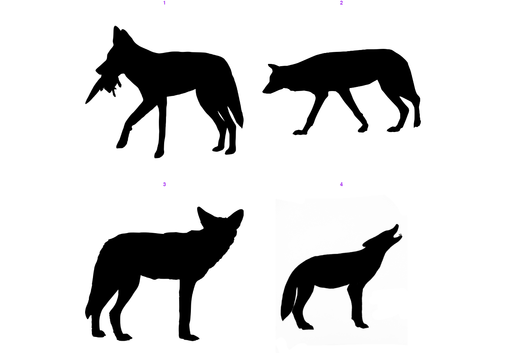
Pick a silhouette
Let’s go with option 1!
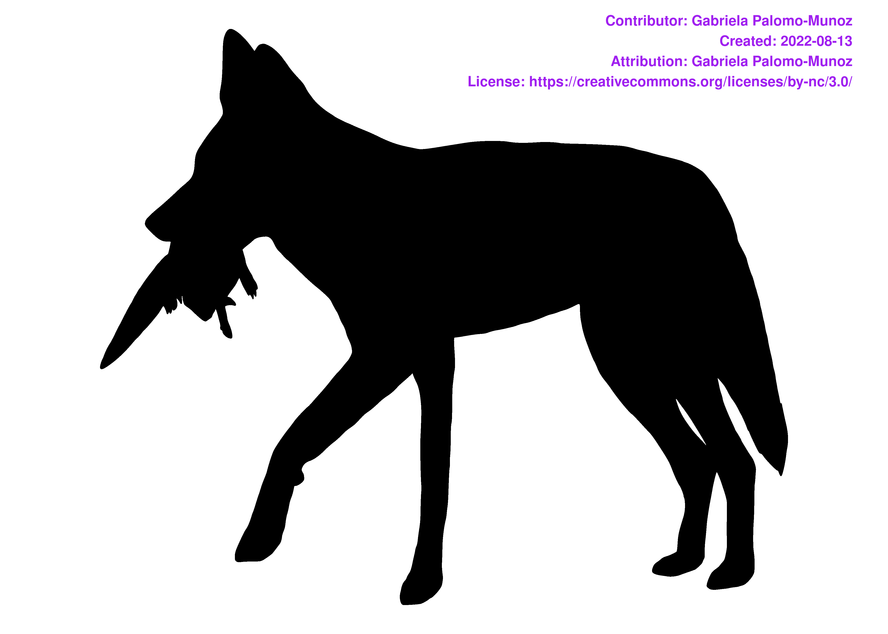
Pick a silhouette
Now let’s inspect the returned object:
PhyloPic silhouette object (vector format)
Dimensions: 1767 pixels wide and 1479 pixels tall
uuid: 113d2520-9f92-456f-b305-52ee3986172d
URL: https://images.phylopic.org/images/113d2520-9f92-456f-b305-52ee3986172d/vector.svgWe have information about the format (vector), dimensions, the UUID, and the URL of our silhouette.
Exercise 1: Get the UUID of a silhouette for your favourite species
Remember, there may be multiple silhouettes available!
- What is the UUID of your chosen silhouette?
- What is the format of the silhouette?
- What are the dimensions of the silhouette?
Plot a silhouette
Now we have selected our silhouette, we can start to make some plots!
Base R
Let’s start with base R by using add_phylopic_base():
# OK, now that we've got the image we want... let's add it to a plot!
plot(x = 1, y = 1, type = "n", ann = FALSE)
add_phylopic_base(img = img, x = 0.75, y = 0.75, height = 0.25)
# But can't we just add an image straight away using the UUID? Sure!
uuid <- get_uuid(name = "Canis lupus", n = 1)
add_phylopic_base(uuid = uuid, x = 1, y = 1, height = 0.25)
# What about just using the first image linked to the name? Definitely!
add_phylopic_base(name = "Canis lupus", x = 1.25, y = 1.25, height = 0.25)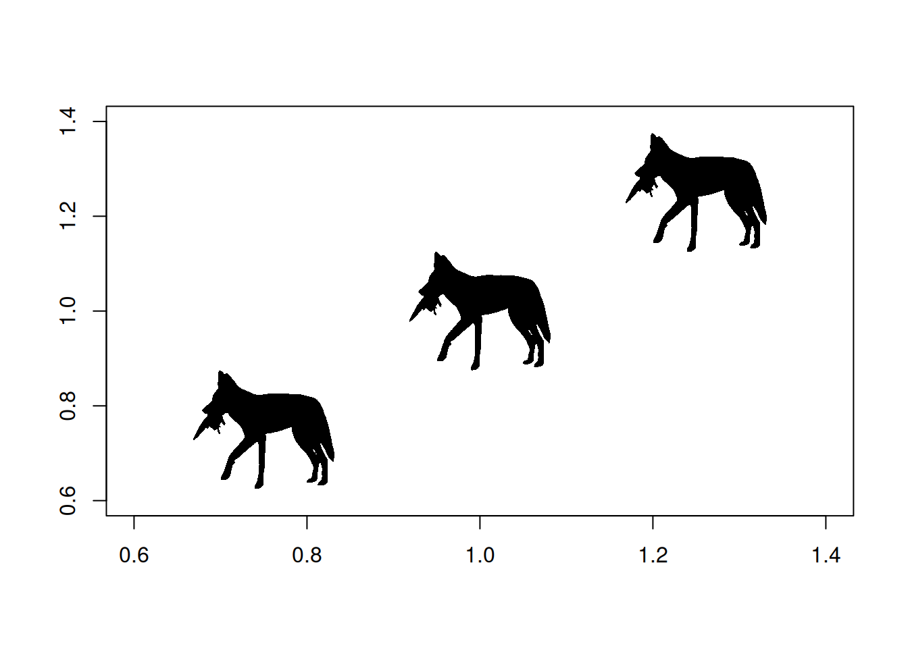
Ah, you’ve found out our little secret! You can actually skip the steps of getting the UUID altogether by just searching for the desired taxon in add_phylopic_base(). However, this will always return the first matched silhouette meaning you might be missing out on all the other options! It’s always worth checking out your options with pick_phylopic() first.
Exercise 2: Plot with base R
Using your favourite species, plot a silhouette of it using the three different input argument options (img, uuid, and name) within the same plot.
Are they all the same silhouette? If not, why might that be?
ggplot2
You can also accomplish the same plot with the ggplot2 package. Here, we’ll use the add_phylopic() function, but the functionality and all of the arguments are equivalent:
# Load library
library(ggplot2)
# Create plot and add phylopic
p <- ggplot() +
coord_cartesian(xlim = c(0.6, 1.4), ylim = c(0.6, 1.4)) +
add_phylopic(img = img, x = 0.75, y = 0.75, height = 0.25)
# But can't we just add an image straight away using the UUID? Sure!
uuid <- get_uuid(name = "Canis lupus", n = 1)
p <- p + add_phylopic(uuid = uuid, x = 1, y = 1, height = 0.25)
# What about just using the first image linked to the name? Definitely!
p + add_phylopic(name = "Canis lupus", x = 1.25, y = 1.25, height = 0.25)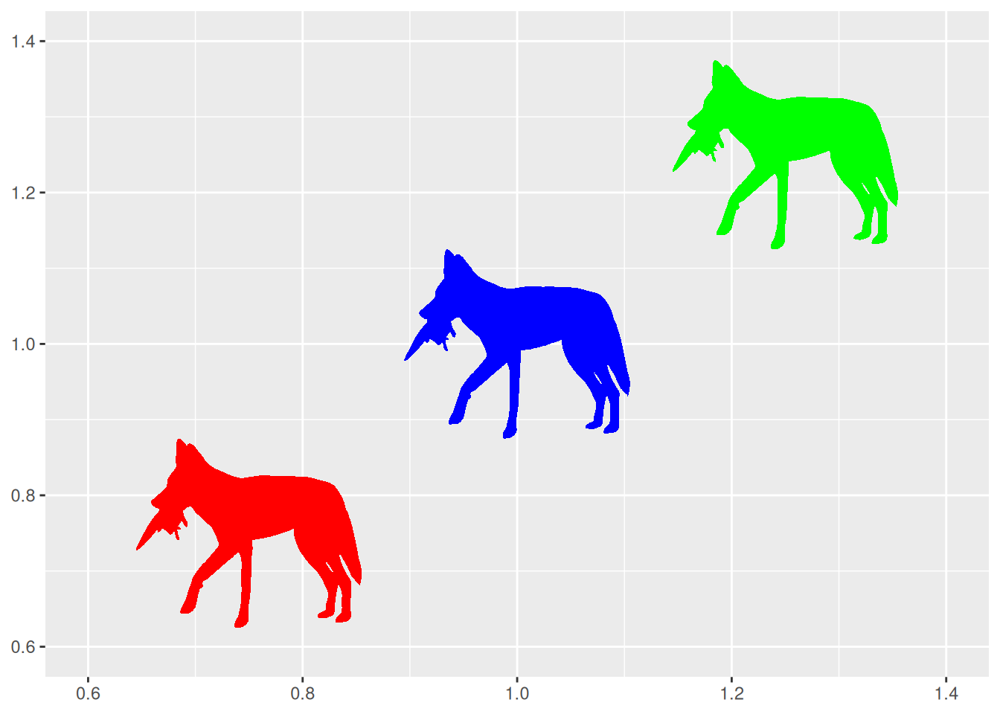
Exercise 3: Plot with ggplot2
Using your favourite species, plot a silhouette of it using the three different input argument options (img, uuid, and name) within the same plot.
Are they all the same silhouette? If not, why might that be?
Transforming silhouettes
Once a silhouette is picked and saved in the your R environment, it may be useful to transform the image to better suit the particular visualisation of interest. Three user-friendly functions are available to accommodate transformations that might be desired: flipping, rotating, and recolouring.
The flip_phylopic() function can be used to flip a silhouette horizontally and/or vertically. This may be useful if, for example, you want all of the silhouettes to face the same direction.
Transforming silhouettes
The rotate_phylopic() function can be used to rotate a silhouette an arbitrary number of degrees. This may be useful when trying to align a silhouette with text or other objects within a figure.
Transforming silhouettes
Finally, the recolor_phylopic() function can be used to modify the fill color, outline color, and/or transparency of a silhouette. The vast majority of PhyloPic silhouettes are solid black, are fully opaque, and have a transparent outline by default. However, it may be useful to change this when the you are trying to either match an existing visualization color palette or trying to convey extra information, such as categorical data, through color.
Transforming silhouettes
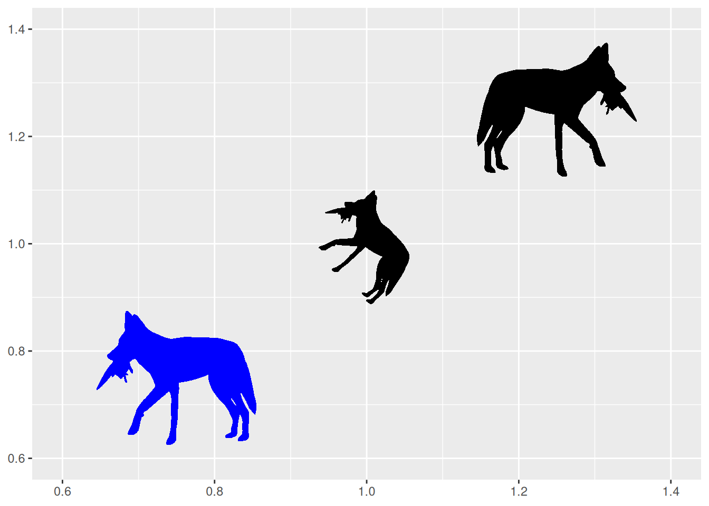
Let’s see what those look like in the same plot:
You’ll notice that the rotated silhouette is smaller than the other two silhouettes. This is because we’ve specifed the height of our silhouettes. The width is then automatically set to maintain the original aspect ratio of the silhouette. In this case, the aspect ratio of the rotated silhouette has changed, so the same height results in a smaller silhouette overall. If you’d prefer, you could also specify the width of the silhouettes.
For convenience, we have also included these transformation options within all of the visualization functions. The default fill is “black”, hence why we needed to specify fill = "original" above. However, when the same transformed silhouette will be used for multiple visualizations, we suggest transforming the silhouette first, saving it as a new object, then using this new object for visualization purposes.
Exercise 4: Transform your silhouette
It’s your turn! After fetching your favourite silhouette (recall: pick a silhouette), try transforming it by:
- Flipping the silhouette
- Rotating the silhouette
- Recolouring the silhouette
Once you have done that, try visualising them altogether.
Get attribution
$images
$images$`7f877a9e-53d7-48d0-a422-d3fa0ff5e2f9`
$images$`7f877a9e-53d7-48d0-a422-d3fa0ff5e2f9`$attribution
[1] "Mareike C. Janiak"
$images$`7f877a9e-53d7-48d0-a422-d3fa0ff5e2f9`$contributor
[1] "Mareike Janiak"
$images$`7f877a9e-53d7-48d0-a422-d3fa0ff5e2f9`$contributor_uuid
[1] "7bed68fb-cf59-4e58-aed1-41e81269fb01"
$images$`7f877a9e-53d7-48d0-a422-d3fa0ff5e2f9`$created
[1] "2020-05-19"
$images$`7f877a9e-53d7-48d0-a422-d3fa0ff5e2f9`$contact
character(0)
$images$`7f877a9e-53d7-48d0-a422-d3fa0ff5e2f9`$image_uuid
[1] "7f877a9e-53d7-48d0-a422-d3fa0ff5e2f9"
$images$`7f877a9e-53d7-48d0-a422-d3fa0ff5e2f9`$license
[1] "https://creativecommons.org/publicdomain/mark/1.0/"
$images$`7f877a9e-53d7-48d0-a422-d3fa0ff5e2f9`$license_abbr
[1] "Public Domain Mark 1.0"Now that you’ve made a plot and used some silhouettes, you should acknowledge the contributors that made those silhouettes. To make this easy, rphylopic includes the get_attribution() function to get contributor data about specific images:
Get attribution
$images
$images$`7f877a9e-53d7-48d0-a422-d3fa0ff5e2f9`
$images$`7f877a9e-53d7-48d0-a422-d3fa0ff5e2f9`$attribution
[1] "Mareike C. Janiak"
$images$`7f877a9e-53d7-48d0-a422-d3fa0ff5e2f9`$contributor
[1] "Mareike Janiak"
$images$`7f877a9e-53d7-48d0-a422-d3fa0ff5e2f9`$contributor_uuid
[1] "7bed68fb-cf59-4e58-aed1-41e81269fb01"
$images$`7f877a9e-53d7-48d0-a422-d3fa0ff5e2f9`$created
[1] "2020-05-19"
$images$`7f877a9e-53d7-48d0-a422-d3fa0ff5e2f9`$contact
character(0)
$images$`7f877a9e-53d7-48d0-a422-d3fa0ff5e2f9`$image_uuid
[1] "7f877a9e-53d7-48d0-a422-d3fa0ff5e2f9"
$images$`7f877a9e-53d7-48d0-a422-d3fa0ff5e2f9`$license
[1] "https://creativecommons.org/publicdomain/mark/1.0/"
$images$`7f877a9e-53d7-48d0-a422-d3fa0ff5e2f9`$license_abbr
[1] "Public Domain Mark 1.0"[1] "Organism silhouettes are from PhyloPic (https://www.phylopic.org/; T. Michael Keesey, 2023) and were added using the rphylopic R package ver. 1.7.0 (Gearty & Jones, 2023). Silhouette was made by Mareike C. Janiak, 2020 (Public Domain Mark 1.0). Silhouette was contributed by Mareike Janiak."However, that’s a lot of raw information to handle. With get_attribution(), you can also get this output automatically parsed to include in your publications with the text argument:
Exercise 5: Get the attribution information
In previous exercises, you selected a silhouette you like. Now, try and get the attribution information for that silhouette.
Save an image
You should be able to accomplish all of your visualisation needs within R, but in the rare case that you need to use a silhouette outside of R, the save_phylopic() function lets you export silhouettes. You can save silhouettes in a range of formats, including: Portable Document Format (PDF), Portable Network Graphics (PNG), Scale Vector Graphics (SVG), Tag Image File Format (TIFF), Joint Photographic Experts Group (JPEG), and bitmap (BMP).
Example usage
Herein, three example use cases of the rphylopic package are presented for both ggplot2 and base R, along with independent exercises.
Basic accession, transformation, and plotting
The rphylopic package provides robust, flexible tools for accessing and transforming PhyloPic silhouettes. To demonstrate them, we’ll use the Antarctic penguin dataset from the palmerpenguins R package.
First, let’s load the libraries and the data:
Basic accession, transformation, and plotting
Now, let’s pick a silhouette to use for the penguins.
Basic accession, transformation, and plotting
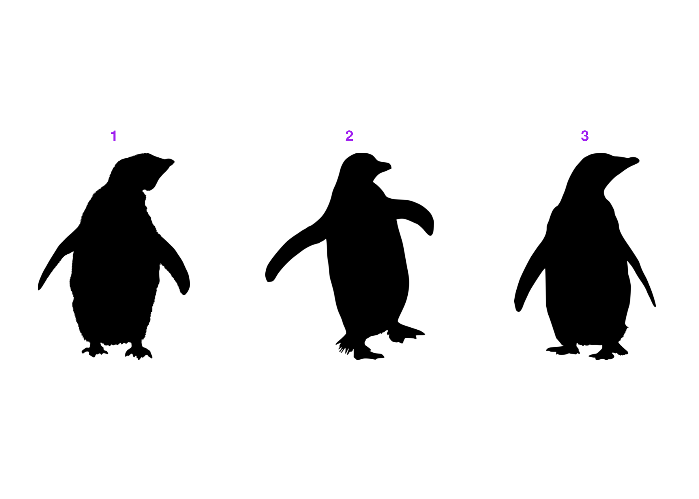
Basic accession, transformation, and plotting
Let’s pick #2:
Basic accession, transformation, and plotting
You may have noticed in the preview that the silhouette was a little slanted. Let’s rotate it clockwise just a smidgen:
Now, let’s draft the plot that we want to make. In this case, let’s plot the penguins’ bill lengths vs. their flipper lengths:
# Calculate shared axis limits so all panels are comparable
xlim <- range(penguins_subset$bill_length_mm)
ylim <- range(penguins_subset$flipper_length_mm)
# Set up the plot area (3 rows, 1 column)
par(mfrow = c(3, 1), mar = c(4, 4, 2, 1))
# Loop over the species and create a plot for each one
for (sp in levels(penguins_subset$species)) {
# Subset the data to the current species and plot it
with(
subset(penguins_subset, species == sp),
plot(bill_length_mm, flipper_length_mm,
xlim = xlim, ylim = ylim,
xlab = "Bill length (mm)", ylab = "Flipper length (mm)",
main = sp)
)
}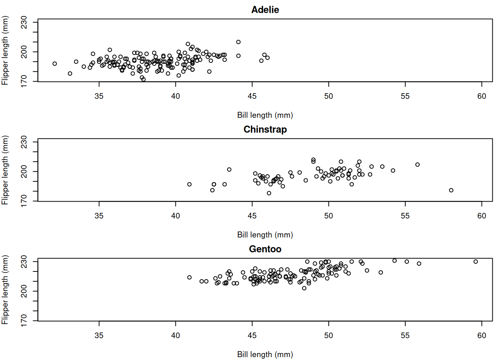
That’s a nice basic plot, but we can make it nicer by adding a penguin silhouette. Sadly, we don’t have a separate silhouette for each species (although we could make one…), so we’ll place a single silhouette in the top panel using the add_phylopic_base() function. Note that the x and y arguments specify the centre of the silhouette, and the height argument specifies how tall it is, in the units of the y-axis.
# Create input dataframe
silhouette_df <- data.frame(x = 59, y = 215, species = "Adelie")
ggplot(penguins_subset) +
geom_point(aes(x = bill_length_mm, y = flipper_length_mm)) +
geom_phylopic(data = silhouette_df, aes(x = x, y = y), height = 30,
img = penguin_rot) +
labs(x = "Bill length (mm)", y = "Flipper length (mm)") +
facet_wrap(~species, ncol = 1) +
theme_bw(base_size = 15)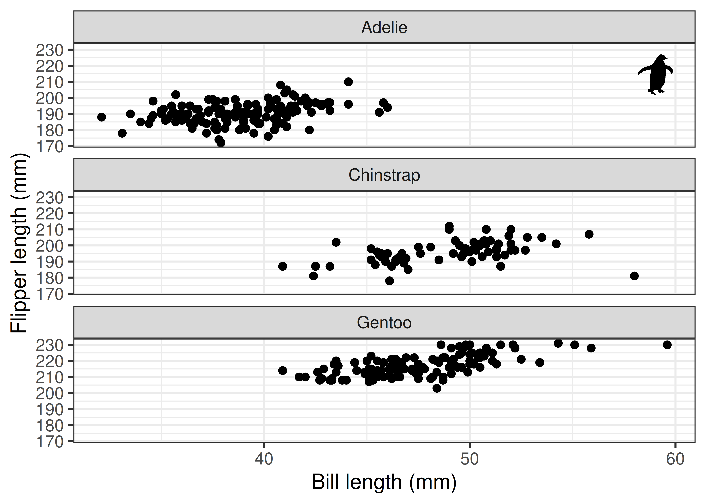
# Calculate shared axis limits so all panels are comparable
xlim <- range(penguins_subset$bill_length_mm)
ylim <- range(penguins_subset$flipper_length_mm)
# Set up the plot area (3 rows, 1 column)
par(mfrow = c(3, 1), mar = c(4, 4, 2, 1))
# Loop over the species and create a plot for each one
for (sp in levels(penguins_subset$species)) {
# Subset the data to the current species and plot it
with(
subset(penguins_subset, species == sp),
plot(bill_length_mm, flipper_length_mm,
xlim = xlim, ylim = ylim,
xlab = "Bill length (mm)", ylab = "Flipper length (mm)",
main = sp)
)
# Add the silhouette to the top panel only
if (sp == levels(penguins_subset$species)[1]) {
add_phylopic_base(img = penguin_rot, x = 59, y = 215, height = 30)
}
}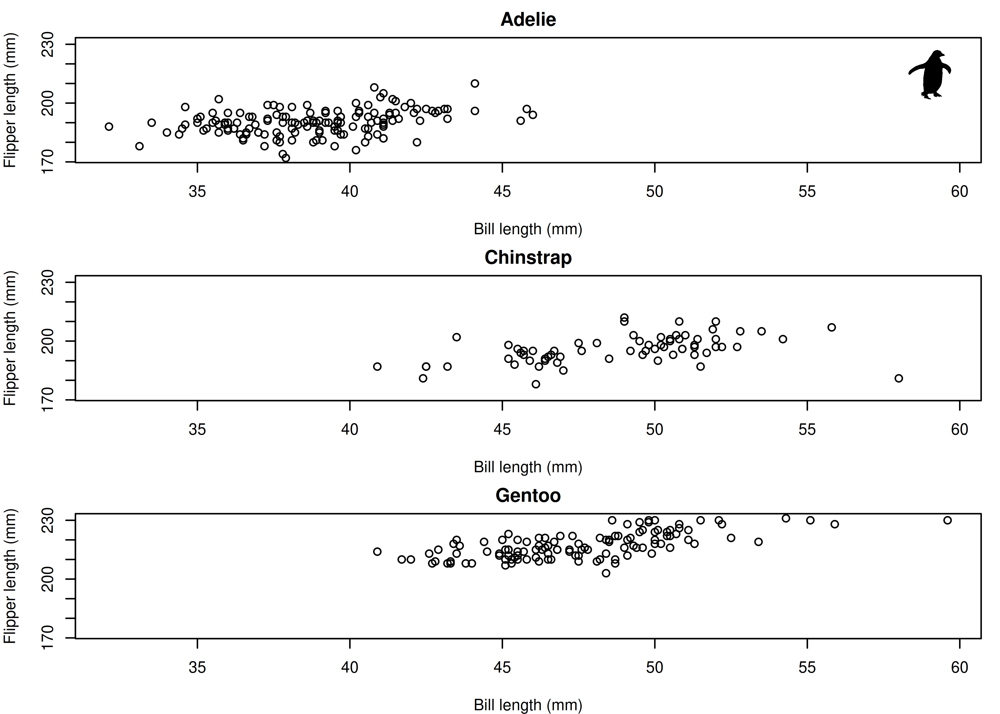
Isn’t that nifty! But we can go a step further: what if we used little penguins instead of points? We can do this with geom_phylopic() (ggplot2) and add_phylopic_base() (base R). Since we want the same image for every x-y pair, we can specify img = penguin_rot once more:
# Calculate shared axis limits so all panels are comparable
xlim <- range(penguins_subset$bill_length_mm)
ylim <- range(penguins_subset$flipper_length_mm)
# Set up the plot area (3 rows, 1 column)
par(mfrow = c(3, 1), mar = c(4, 4, 2, 1))
# Loop over the species and create a plot for each one
for (sp in levels(penguins_subset$species)) {
# Subset the data to the current species
species_data <- subset(penguins_subset, species == sp)
# Create an empty plot with the shared axis limits
plot(NA, xlim = xlim, ylim = ylim,
xlab = "Bill length (mm)", ylab = "Flipper length (mm)",
main = sp)
# Add a penguin silhouette at each x-y pair instead of a point
add_phylopic_base(img = penguin_rot,
x = species_data$bill_length_mm,
y = species_data$flipper_length_mm)
}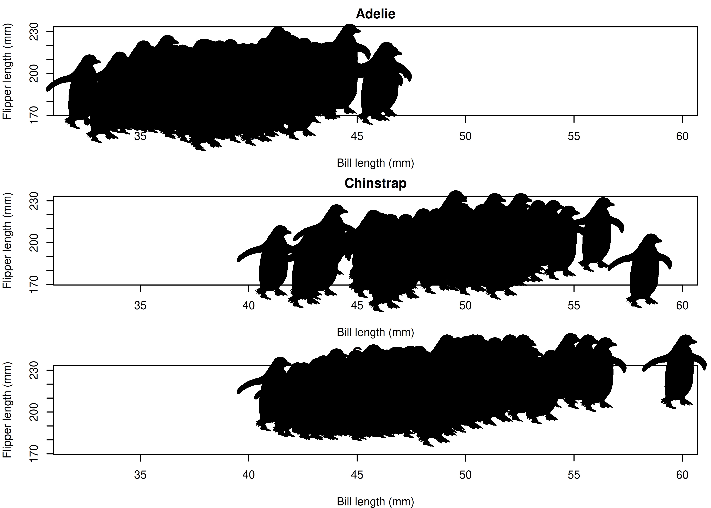
Oh no, the silhouettes are way too big! By default, geom_phylopic() and add_phylopic_base() makes each silhouette as tall as the plot, which is far too large here. Instead, we can specify a height or width to use (in y-axis or x-axis units, respectively):
# Calculate shared axis limits so all panels are comparable
xlim <- range(penguins_subset$bill_length_mm)
ylim <- range(penguins_subset$flipper_length_mm)
# Set up the plot area (3 rows, 1 column)
par(mfrow = c(3, 1), mar = c(4, 4, 2, 1))
# Loop over the species and create a plot for each one
for (sp in levels(penguins_subset$species)) {
# Subset the data to the current species
species_data <- subset(penguins_subset, species == sp)
# Create an empty plot with the shared axis limits
plot(NA, xlim = xlim, ylim = ylim,
xlab = "Bill length (mm)", ylab = "Flipper length (mm)",
main = sp)
# Add a penguin silhouette at each x-y pair instead of a point
add_phylopic_base(img = penguin_rot,
x = species_data$bill_length_mm,
y = species_data$flipper_length_mm,
height = 5)
}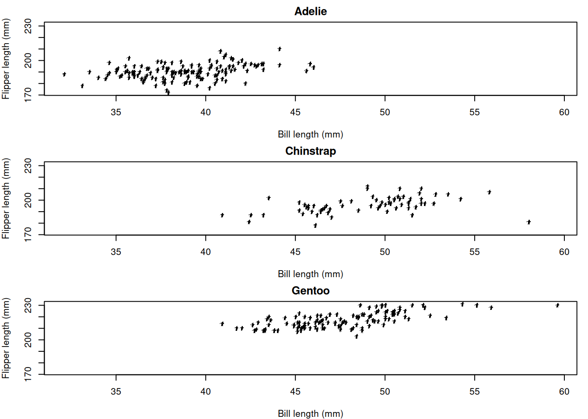
Exercise 6: Vary silhouette height with data
So far we have set the silhouette size by hand. Instead, we can map the height to another variable in our data, and rphylopic will scale the values for us automatically.
Your task: Make the size of the silhouettes relative to the penguins’ body masses (body_mass_g).
Basic accession, transformation, and plotting
Exercise 6: Solution
Geographic distribution


Phylogenetics

Network plots

Callouts
An exercise solution
A collapsed callout is the exception: it keeps its box. Since clicking on slides can be awkward, the collapsed content is held back as a fragment and revealed when you advance. On the website it stays a click-to-open box.
Callouts
note
Callouts
important
Callouts
warning